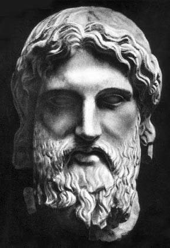
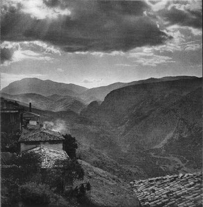
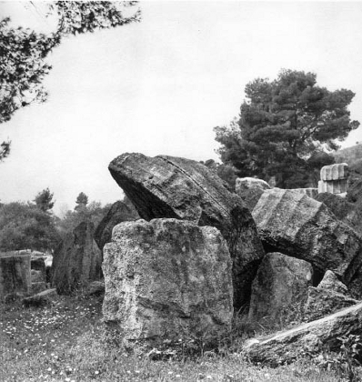
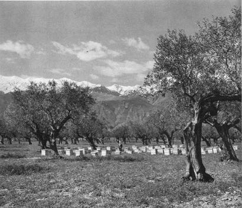

Sokrates çağdaşlarına göre bir bilmeceydi, bize göre de hâlâ kuşkusuz hiçbir zaman karşılığını veremeyeceğimiz bir bilmece olarak kalmaktadır. Çok tuhaf, neredeyse deli gibi, ama salt sağduyu ve hatta sıkı bir mantık sahibi bu adam ne bizi şaşırtmayı bıraktı, ne de bizi aydınlatmayı ve buluşlarını, bilgisini ve değerli bilgisizliğini bize dağıtmayı.
Ama bu hem tuhaf hem de olağan yaşamın en şaşırtıcı yönü onun sonunu getiren ölümün inanılmaz doğurganlığıdır. Bu ölüm Sokrates’in sözünün ve uğrunda hayatını verdiği doğruluğun önemini, bunu çelişkili bir biçimde söyleseler bile, yüzyıllar arasından bize aktaran bir tanıklar takımını –yandaşlar ya da hasımlar– ortaya çıkarır.

437 ve 432 arasında Olympia’da Pheidias tarafından
gerçekleştirilen altın ve fildişi heykelden esinlenen
mermer bir Zeus heykeli başı.
Peki bu sözün içeriği nedir? Sokrates niçin öldü? Hangi doğru ona yaşamdan daha değerli görünür? Güçlüğümüz burada başlar; tarihçilerin büyük şaşkınlığı burada başlar. Çünkü gerçekten itiraf etmemiz gerekir ki, hasımlardan söz etmesek bile, onu yakından tanıyan öğrencilerinin tanıklıkları genellikle çok çelişkilidir. Şimdi yalnız Sokrates’i sağken tanımış olan kişilerin tanıklıklarına bağlı kalarak bunları sıralayalım:
Önce, İ.Ö. 423 yılında, Sokrates’i Bulutlar komedyasının baş kişisi yapan Aristophanes gelir. Sokrates bu tarihte kırk altı yaşındadır. Kuşkusuz uzun zamandan beri Atina’nın sokaklarında ve meydanlarında ders vermektedir. Adalet kurumları, onu rahatsız etmeyi ve Halk Mahkemesi karşısına çıkarmayı düşünmeden önce yirmi dört yıl daha ders verecektir. Aristophanes ise bir komedya şairidir, türün kuralları gereği Sokrates’i renkli bir karikatür haline getirir. Ayrıca seyircisine kimin olduğu hemen anlaşılan bir karikatür sunması gerekir. Aristophanes kurbanına ünlü “bilgiç” maskesini giydirir; bu, yukarıda gördüğümüz gibi, ilkel halk ilhamına yakın olan, dünyadaki tüm halkların güldürülerinde varolan bir kişiliktir. Aristophanes’in Sokrates’i, elbette, onda komedyanın tüm bilgiçlerinde ortak olan güldürü özelliklerinin abartılmasıyla basitleştirilmiştir. Ama yine de şair tarafından abartılan özelliklerin gerçek Sokrates’de, çekirdek halinde varolduklarını kabul edelim. Şimdi, Bulutlar’daki Sokrates’in iki temel özelliğinden biri, doğa olaylarını, tanrıları işe karıştırmaya gerek olmaksızın, filozofça açıklamalar yapmasıdır: Aristophanes’in Sokrates’i, yağmuru ve fırtınaları Zeus’un işi olarak değil de bulutların işi olarak açıklar; bu bakımdan o, sözcüğün kökensel anlamında, bir tanrıtanımazdır. Öte yandan Bulutlar’ın Sokrates’i, şair tarafından mahkemelerde “en zayıf davayı en güçlü kılmaya” olanak veren bilim olarak gösterilen safsatayı uygular, yani gençlere suçlarının, örneğin zinanın, cezai sonuçlarından kolay bir kurtulma yolu sunarak, onların ahlakını bozar. Bu durumda, Aristophanes’in Sokrates’inin bu iki özelliğini –tanrıtanımazlık ve gençlerin ahlakını bozma– yirmi dört yıl sonra Sokrates’e karşı öne sürülen iddianamede aşağı yukarı aynı biçimde kaleme alınmış olarak buluyoruz. Platon iftira diye gördüğü portrenin doğruluğuna karşı çıkmakla birlikte, bu benzerliğin varlığını belirtir.
Şimdi de öğrenci tanıklara-havarilere bakalım: Bunlardan en büyükleri aynı zamanda, apaçık karşı çıkışları ile birlikte, Sokrates’e yakınlıklarıyla onun hakkında bilgi verebileceklerini öne süren felsefe okullarının kurucularıdırlar.
Başta Platon gelir. Platon hocasına, onun öz düşüncesini edebiyat tarihine katmakla eşsiz saygısını gösterir ve bunu hemen hemen elli yıllık bir yapıt boyunca, kendisini bilgelikte eğiten kişinin ağzından yapar. Platon yapıtlarında Sokrates’i Platoncu idealizmin yaratıcısı olarak gösterir. Platon büyük bir şairdir ve Sokrates’in kendisinden yola çıkarak yaptığı çarpıtma kuşkusuz komedya şairi Aristophanes’inkinden daha az önemli değildir. Zaten Aristophanes’e karşı çıktığı kadar, onu doğruladığı ve onayladığı da olur.
Ama Platon yalnız şair değil “siyasal” efsaneler yapımcısıdır; belki de öncelikle “siyasal” bir baş ve Atina demokrasisinden tiksinen bir insandır. Yapıtının her parçası bunu belirtir ve ondan kalan mektupların en ünlüsünde, siyasal yapısını kendisi de kabul eder. Bu durumda Sokrates’i, hem de antidemokratik anlamda “siyasal” kılması son derece olası görünür. Yine de halktan gelen Atinalı Sokrates’in, bazen düşüncesizce öne sürüldüğü gibi, gerici Platoncu ideolojinin ilk kurucusu olmasını hiçbir şey, kesinlikle hiçbir şey bize tanıtlamaz.
Öbür tanıklara bakalım, IV. yüzyıl düşüncesinin iki kutbunda gibi duran, ama Sokrates’i de kaynak gösteren çileci Kinikler Okulu’nun kurucusu Antisthenes (Antistenis) ile hazcıların akılcı haz okulunun kurucusu Aristippos vardır.
Filozof değil de tarihçi olan ya da kendini öyle gören bir öğrencinin, Ksenophon’un fazlasıyla yaptığı tanıklığı da unutmayalım; fazla çekiştirilen ve hiç de gösterilmek istendiği kadar dar görüşlü olmayan, çok dürüst dost Ksenophon, duyduğu çok sayıda Sokratik konuşmayı bize aktardığını öne sürer. Yine de köylü mülk sahibi ve süvari birliği komutanı konumunun onu kuşkusuz özel olarak Sokrates’in dersini doğru aktarma yönünde hazırlamadığını belirtelim. Tersine asıl Sokrates’in imgesini çarpıtmıştır. Komedya şairinden ya da filozof-şair, politikacı-şairden az mı çok mu? Buna karşılık vermeyi üstlenemem.
En sonu, hiç değilse bir aleyhte tanığı, Sokrates’e karşı bir suçlamanın yazarı (bu, arkhona verilen resmi bir suçlama değil, bağımsız bir yapıttır) Polykrates’i anmak gerekir. Bu yapıt günümüze ulaşmamıştır, ama ne kadar gecikmeli olursa olsun, elimizde onun doğru olduğuna inanabildiğimiz bir özeti bulunuyor.
Çok sayıdaki bu tanıklar elbette sık sık birbiriyle çelişirler. Bunların değerlerini tartmak, aralarından seçim yapmak, belki de tümünü reddetmek: İşte bilim adamları için tam bir inceleme konusu.
Şu son yıllarda Sokrates konusunda ve hemen her zaman sözünü bize saklayan geleneklerin değeri hakkında kuşku duymak kaydıyla, çok şey yazılıp çizildi. M. Magalpaes-Vilheda’nın, bazen konuyla ilgisi olmayan açılımlarla fazlaca şişmiş olmasına karşın, çok akıllıca, derin bilgilerle tıkabasa dolu çalışmalardan oluşan –Sorbonne tezleri– iki koca yapıtı var. Ayrıca, İsviçreli profesör M. Gigon’un ilk bakışta tarafsız, ama çok da olumsuz, metinleri tartışırken kılı kırk yaran, titiz ve tüm Sokratik edebiyatı ancak kurgu düzeyine indirgeme iddiasında varsayımlar hazırlatmakta kararlı kitabı var. Eskilerin Sokrates hakkındaki tanıklıklarını biri diğerini çürütecek şekilde yıkma hırsında insanı kızdıran ve sonuçta kuşku götürür bir şeyler var.
Doğrusunu söylemek gerekirse bu yazarların ikisi de V. yüzyılın son çeyreğinde yaşamış ve konuşmuş olan Sokrates adında bir Atinalının varlığını yadsımazlar. Onlar ne davayı yadsırlar ne de bu davanın sonucu Sokrates’in ölüme yollanmasını.
Ama gerisi de onlara basit bir efsane, uydurma, şiirsel yaratım gibi görünür; M. Gigon, Dichtung[13], diye yazar, Platon’un diyalogları için de, felsefi şiirler der.
İşte bu tez, bu incelemenin başlangıcında, beni biraz eleştiri yapmak zorunda bırakmaktadır. Tez ilk bakışta hem şaşırtıcı hem de çekicidir, ama asla inandırıcı değildir.
Gerçekten de bu tez bazı itirazları gerekli kılar. İlkin iki büyük Platoncu filologun otuz kırk yıl önce Gigon ile Magalhaes-Vilhena’nın savundukları tezin tam tersini aynı güvenle savunduklarını hatırlayalım. Burnet ile Taylor’a göre, Platon’un Diyalogları uydurma ve şiir olmaktan çok uzak, Sokrates’in gerçek konuşmalarının doğru özetleri ve nerdeyse tutanaklarından başka bir şey değildirler. Onlar yanılıyorlardı, ama düşünceleri uzun süre baskın çıktı.
Öte yandan tanıklıklar arasında bulunduğu öne sürülen çelişkilerin söylenmek istediği kadar da çok ve belki de bazen altı çizilmesi unutulan tanıklık benzeşmelerinden daha çok sayıda olmadıklarını saptayalım. Örneğin, dediğim gibi, 423’te Bulutlar’ı yazan Aristophanes, kendini Anaksagoras gibi “meteorlar”ın, yani yıldızların ve göksel olayların gözlemine veren, daha iyi gözlemek için de havada asılı bir sepetin içine yerleşen bir Sokrates ile tatlı tatlı alay eder. Kırk yıl sonra yazılan Platon’un Phedon’unda ise, Sokrates kendini Anaksagoras’ın bir öğrencisi sayar: O da önce dünyanın biçimi hakkında, güneş hakkında ve ay hakkında araştırma yapmıştır, hiç de ahlak hakkında değil. Tercihen yorum farklılıklarını belirtmekle oyalanmak yerine neden tanıklıklardaki bu dikkate değer uygunluğu göz önüne sermemeli?
Demek oluyor ki, tanıklıklar arasında birtakım uygunluklar vardır. Ama Sokrates’in yaşamının bütün tanıklarının her konuda uyuşmaları isteniyor. Ancak hem Aristophanes, Platon, Antisthenes, Aristippos, Ksenophon hem de öbürlerince doğrulanacak olayları gerçek kabul etmek istiyorlar. Böyle bir istek saçmadır. Aynı olaylar konusunda tanıkların oybirliği, dünyanın en şaşırtıcı –sözcüğü tekrarlayalım– en şüpheli şeyi olurdu. Hiçbir davada asla görülmemiştir bu. Ayrıca, bu tanıklar aynı görüşmelerde zorunlu olarak hazır bulunmamışlardır. Çelişkili Sokrates’i aynı gün aynı ışık altında görmemişlerdir onlar. Hepsi onu yaşamının aynı döneminde tanımamışlardır. Ne tür bir mucize istenmektedir ki? Birbirlerinden farklı, yaş, meslek, huy, düşünce bakımından farklı insanların aynı ya da benzer bir tanıklık sunmaları mı isteniyor. Burada yalnızca olaylar üstünde değil, olayların yorumu üstünde de tanıklık etmenin söz konusu olduğunu göz önünde tutalım. Hasılı, Sokrates’in düşüncesi konusunda, eskilerin bize Sokrates’in gizlemekten hoşlandığını ve anlamı belirsiz alaysamayla doldurduğunu söyledikleri bu düşünce konusunda tanıklık istenmekte. Köylü mülk sahibi ile idealist filozofun, adı Platon olan o iflah olmaz şairin ya da gelmiş geçmiş en çılgın komedya şairinin ya da hazcı filozof ile çileci filozofun aynı olayları ve aynı düşünceleri aynı biçimde aktarmamalarına ve açıklamamalarına gerçekten şaşmak gerekir mi? Şaşırtıcı, daha doğrusu düşünülmez olan tersidir.
Çok doğal olan bu ayrılıklardan, bu çelişkilerden dolayı Sokrates’in gerçek olmadığı, antik edebiyatın onu bize tanıttığı gibi, karakterinin efsanevi, uydurma, kurmaca olduğu kanısına varılır mı? Bu kanı bana biraz saçma gelir.
Sağlam gibi görünen ve Burnet ile Taylor’un tezine haklılık gibi bir şey kazandıran tek şey, çağdaşlarının bize sundukları ve hepsi de yorum olan çeşitli Sokrates portrelerinin, aynı anda tümünün tarihsel Sokrates ile onu tanımaya olanak veren bir benzeşme içerisinde olması gerektiğidir.
Ayrıca, tarihsel Sokrates’e 469 yılında ebe kadından doğan ve 399 yılında zehir ve haksızlığın soluğunu son kez dudakları arasından üfürdüğü ana kadar hem çağdaşları hem de uzun süre kendisi için bilmece gibi bir yaşam süren tek Sokrates diyebiliriz. Gerçek Sokrates insanların belleğinde hâlâ yaşayan kişidir; tarihsel Sokrates düşünce tarihi üzerinde etki yapan, bize ondan söz eden kişiler arasında ona yaklaştığımız her seferinde insanlık tarihinde yani bizim tarihimizde devinen kişidir. Tarihsel Sokrates ile efsanevi Sokrates tek ve aynı varlık –devindiğine göre canlı bir varlıktır.
“Efsanevi” Sokrates yaşarken bile vardı, kendi gözlerine yabancı “asıl” Sokrates’in içinde bile vardı. İşte Sokrates sorununun örnek oluşturacak bir tarihsel sorun olarak kalması da bundandır. Gerçekten de bütün tarihsel olaylar hakkında, bunların her zaman, değişik düzeylerde olsa da, tarihin “yapıları” olduklarını söyleyemeyiz. Ne ki bunlar olgulardır. İş görürler.
Demek ki Sokrates’de iki kişilik olduğunu varsayıp ayrımsamak istemek, onun yaşamında ikisi de geçerli olan iki varoluş biçimini ayırt etmek istemektir. Gerçek Sokrates’i, kendisi hiçbir şey yazmadığı için, onu öğrencilerinin tanıklığıyla tanımış olan herkes için olduğu gibi içimizde yaşayan haliyle ikinci bir kez ölüme mahkûm etmektir bu.
Ben bu cinayeti işlemeyi kabul etmiyorum. Çok sayıda ve çelişik Sokratesler, Sokrates “değişkeleri” ayırt etme iddiasında olan eleştiri, elimizde kalanlara bakıp bunları daha fazla ciddiye almış gibi görünerek, yitip gitmiş Sokrates konuşmaları ile açıklamak amacıyla düş kurmaya kalkıştığı her seferinde, bu cinayeti işler.
Gerçekte böylesi filologların kendileri ciddi değildirler. Onlar için Sokrates bir oyun, parçalarından çoğu elimizde olmayan bir tür boz-yap’tır ve onlar bu parçaları yeniden imal ederler. Bir oyun değildir Sokrates. Bir canlı varlıktır o. Öyle ya bizi de yaşatıyor. Tarihsel ve efsanevi bir bütündür o; öyleyse bu olaydan benim aldığım darbe yüzünden –öyle ya sarsıldım, yalnız benim değil, insanlık tarihinin uğradığı sarsıntı– tanıklıklar arasında yapacağım seçime göre bir yol saptayarak ele alacağım onu.
Gerçekten de, bugün göründüğü gibi Sokratik eleştiri bana göre bu noktada ağır hatalı görünür. Sokratik şok adını vermek gereken şeyi, eleştiri aklından bile geçirmez.
Ama gerçekte, yarım yüzyıl boyunca Atina sokaklarında Sokrates’in kişiliğinin ve öğretiminin etkili varlığı olmaksızın ve hele 399’da Sokrates’in ölümü konu edilmeksizin daha sonraki hiçbir şey açıklanamaz. Sokratik edebiyatın zenginliğini ve çeşitliliğini yalnız öğrencilerin uğradığı sarsıntının şiddeti açıklar. Gerçek bir kişinin yol açtığı bu gerçek sarsıntıyı her biri farklı bir biçimde aldı; çünkü onlar da birbirinden farklıydılar, ama her biri bu sarsıntıyı kendi bedeninde duydu. Sokrates’in ölümünden sonra icat edilen hiçbir şiir, sanatın gücü ne kadar büyük olursa olsun, şairlerin, tarihçilerin, filozofların tümünü, hem de yüzyıllar boyunca harekete geçirecek durumda değildi. Burada, sanki cesetler söz konusuymuş gibi teşrih ettikleri canlı metinler üstüne eğilmiş eleştirmenlerin miyop gözlerine bana göre göz kamaştırıcı bir aydınlık gibi görünen bir cevap vardır. Örneğin Platon’dan Sokrates’in ölümünün öyküsünü almak –bununla bana, çok farklı dinleyiciler karşısında aynı heyecansal gücü hissettiğimi söyleme olanağı verilecektir– bunu “Sokrates’in filozofik şiiri” adı verilen bir bölümün içeriğinde sınıflandırmak, saçmalığa yaklaşan bir terslik gibi geliyor bana. Bir hiçten ya da hemen hemen hiçlikten yola çıkarak hiçbir zaman böyle bir şiir yaratılmamıştır.

Delphoi, akşam.
Ama yapmacık oluşun bir kötü niyet kuşkusu da barındıran ve bizi devingen Sokrates’den uzaklaştırmaya çalışan bu incelemeleri kendi kaderlerine terk etmenin vaktidir; olayları öbür ucundan yeniden ele almanın ve hem tarihsel hem de efsanevi Sokrates’i, bizimle daha iyi ilişki kurması için, hoş ve alaysama maskesi ardında anlamsız saçmalığa kaymış, gizlenmiş gibi görünen bilmece gibi bir Sokrates’i yeniden yaşatmanın tam vaktidir.
Sokrates gençleri çok sevdi: İnsan onun gençliğini bilmek ister.
Bir harika çocuk olmadı o. Bir tanrı ona işaret ettiği için kırk yaşında misyonunu anlar. Delphoi’da, Apollon tapınağında taşa kazınmış çoktandır söylenen Hellen bilgeliğinin şu büyük sözünü okumuştur: “Kendini bil.” Dikkatsiz bir hacı gibi gözleriyle okuyup geçmiş değil de, gençliğini sıkıştırıp duran sorulara bir karşılık gibi kendi içinde duymuştur: “Kimsin ve neye yararsın sen? Ne biliyorsun? Ne işine yarar senin bilgin? Hem ateşli hem aklı başında bir ruhu, hem tutkulu hem de olacak en soğukkanlı akılcı bir yaratılışı vardı. Yaşamını ortaya koymaya, ama bilinçli olarak ortaya koymaya can atıyordu. Kendini tanımayı öğrenmesi gerekiyordu onun.
Çocukken, şairler kendisi hakkında bilgi edinmesine yardım ederler. Beklenenden başka türlü gelişir. Okulda onların güzel öykülerini öğrenir; özdeyişlerini öğretmene ezberden okur. Tanrıların gücünü ve insanın emeğini belirten bu sesi sever. Ama aklı hiç de kendini dizelerin ritmine kaptırmaz. Şairler ona dünyada en çok anlamak istediği şeylerden, tanrılardan ve insandan söz ederler. Çocuk yalnız onların konuşmalarına izin vermez. Soru sorar. Homeros’a, Hesiodos’a ve Pindaros’a “Gerçeği söylüyor musunuz?” diye sorar. Ve eğer yalanlarını yakalarsa, doğru ve iyi olmalarını istediği dünyanın yöneticilerine kötü bir eylem yüklediklerini görürse, kahramanlarının dürüst bir insana yakışmayan bir erdem anlayışıyla yetindiklerini saptarsa çocuk şiire kızar. İçinde taşıdığı ve gerçek bildiği idealin bu yalancı taklidini reddeder. Şairlerle düşüp kalkması ona kim olduğunu değil de, en azından neyi aradığını ve neyi sevdiğini gösterir.
Bilginler de gerçeğin peşindedirler. O zamanın bilginlerinin çoğu, dikkatle gökyüzünü incelerler, yıldızların hareketini anlamaya, dünyanın biçimini tasarlamaya, onu oluşturan özü kavramaya çalışırlar. Yeniyetme Sokrates onları dikkatle ve güvenerek dinler. “Fizikçiler” adı verilen bu kişiler ona kuşkusuz bilginin anahtarını vereceklerdir. Ona dünyanın ne olduğunu açıklayan fizikçiler Sokrates’in niçin dünyada olduğunu ve ne yapması gerektiğini söyleyeceklerdir. Hemen fark edilir ki bilginler de yaşamak için çözmesi gereken şu tek “Ben kimim?” sorusuna şairlerden daha iyi cevap veremezler. İnsan kendi doğasını, özünü bilmiyor ise, evreni keşfetmek neye yarar? Tanrılar dünyayı doldurduklarına ve yönettiklerine göre onun nasıl yapıldığını da biliyorlardır. Onların oturdukları doğanın sırrını zorla elde etmeye çalışmak boşunadır, dine aykırıdır. Ama mutluluk isteği ve erdemli olmak erkine sahip insan ruhunu, onunla ilgili gerçekleri hangi bilgin ortaya çıkaracaktır acaba? Doğa, tanrılarındır, insanın aklı ve özü ise insanın kendisine aittir. Güneş ya da ay tutulması ve meteorlar bize nasıl yaşayacağımızı belirtmezler. İçimizde mırıldanan ve bütün insanlarla konuşarak bir anda onların ortak onaylarının gücünü kazanan şu akıllı cılız sese biraz kulak vermeyecek miyiz? Sokrates gereken tek gerçeğin kanıtını tanrısal alanda aramak üzere insandan ve ona hizmetten kaçan kişilerin boş bilimini reddeder. Ondan türeyen okullarla son derece artan Sokrates’in etkisi eskilere asıl anlamıyla bilime dayalı “felsefe”yi seçtirmek için çok şey yapmıştır. Bilimleri şimdilik bir yana ayırarak kendini insanın bilimi ile sınırlayan bir “felsefe”nin seçimidir bu! Sokrates’de hiçbir şey bu bilgi kadar önemli değildir. Dediği gibi, insan tarafından özünün, ruhunun fethi dışında, hiçbir şey onu bağlamaz. İnsanlığın tarihinde, ahlak bilimini belirgin kurallara göre kurmak için kuşkusuz daha çok erkendir. Sokrates bilmez değildir bunu. Ama yüzyılları atlayıp geçmeyi sever o...
Sokrates’i çok istediği bu bilinçlenmeye, şairler ve bilginlerden daha çok zanaatçılar yaklaştırırlar. Ona göre her insandan öğreneceği bir şey vardır; mademki her insan kendiliğinden insan hakkındaki gerçeği elinde tutmaktadır. Ama titiz ve sıkı kurallarla mesleğine bağlı olan zanaatçının, halktan insanın yeri başkadır. Sokrates halktan biridir. Sokakta yaşar. Kendini doğuştan zanaatçı olarak duyumsar (neyi imal edecektir?), yaptıkları nesnelerin teknik dilini konuşan herkesin kardeşi gibi görünür. Öğrencilerinin çoğu aile çocukları olacaklar; çoğu ona sadece işsizliklerini gidermesi için gelecektir. Sokrates işçidir, çalışan insanların çocuğudur. Ebe olan anası mesleklerin en eskisinde uzmandır. Babası Parthenon’da kullanılan taş blokları yontan, yerleştiren ve perdahlayan şu yontuculardan biridir. Sokrates sık sık işçilerle görüşür. Faydalıyı ve güzeli, erdemi ve kamu yararını tanımlamak için demirhanede bulunur, ayakkabıcıdan örnek alır, el işçisini sorguya çeker. Yaşamı boyunca marangoz ve duvarcı, arabacı ve çömlekçi söyleşilerinde bulunacak ve onun ağzından politikacılara ve safsatacılara cevabı yapıştıracaklardır. Zanaatçılar Sokrates’in ilk düşünme öğretmenleridirler. Sözünü ettikleri nesneleri bilmek zorundadır onlar. Ne işledikleri maddeye ne de güttükleri amaca hile karıştırabilirler. Ellerinden çıkan nesnelerin kendilerinden beklenen hizmetleri yapmaları gerekir. Demek oluyor ki zanaatçının sanatını öğrenmesi ve onu ellerine aktarması gerekmektedir. Sokrates bir eşya üretmeye olanak veren kuralların sıkılığına hayranlıkla bakar. İşçinin el hareketleri ve dilindeki düzenli belirginliğe hayret eder. Güvenilir kuralları uygulamasıyla, bir yapıtı yapması gereken işe tam olarak uyarlayan bu işçi çalışmasına imrenir. Böyle bir iş güzeldir.
Sokrates’in, yontucu babasının yontma kalemini eline aldığı da oldu. Yine de aynı güven, aynı bilim, aynı işçi bilinciyle biçimlendirmek istediği bir başka madde onu kendine çeker: İnsan ruhudur bu. Sokrates güzel ruhları gün ışığına çıkarmak için bir teknik bulmak ister.
Ağır bir çıraklığın sonunda, Sokrates aradığı şeyi ve onun ne olduğunu anlar. İnsanın içinde olan ve insanla ilgili olan gerçeği ondan elde etmeye olanak veren bir yöntem arar. İnsan yaşamına ilişkin bir bilim arar, mesleğini kararlılıkla seçecek kadar kendini tanır. Göbek bağı kesen anasının eski mesleğini alır. Ruhları taşıdıkları gerçeğin meyvesinden kurtarır.
Ruhları doğurtan (ebe) olmak üzere doğmuştur o.
Ama sonunda bu seçimde karar kılmak için gençliğinin karanlık yıllarında hangi çetin yoldan geçmek zorunda kalmadı ki? Ruhun engelleri ile binişen ne gibi ten engelleri sadece gerçek istemine götüren bu yolda buluştular? Onun şu kır tanrısı çehresine bir bakın: Ruhlara olan aşkından başka onu ne gibi isteklerin sarmaladığı görülecektir.
Sokrates şarabı severdi; ama bu yılmaz içkiciyi kimse asla sarhoş görmemiştir. Sokrates genç bedenleri severdi; ama davasında kimse onun bunu utanılacak bir alışkanlığa dönüştürdüğünü öne sürmeye cesaret etmedi. O, yaratılışını kasıp kavuran bütün nefis ateşini tek bir vuslatın, gerçeğin şiddetli arzusu haline dönüştürdü! Hayvansı çehresinde, o büyülü dudakların üstüne ruhun sözü gelip konacaktır.
Ancak tasarlayabildiğimiz, hem de kuşkusuz sert geri çevirmeler pahasına tasarlayabildiğimiz iç mücadeleler arasında kazanılan bu eğilimi Delphoi tanrısı bir gün ona bütün açıklığıyla gösterir.
Öyküyü biliriz. Uzun zamandır kendi kendisiyle ve birkaç tanıdığı ile konuşan Sokrates çoktan olgunluk çağına varmıştır. Ama o mesleğini henüz hiç de bir tanrı hizmeti ya da bir halk hizmeti olarak almıyordu. Çocukluk arkadaşlarından biri bu dünyada Sokrates’den daha bilge bir adam olup olmadığını Apollon’un bilicisine sormayı düşünür. “Ondan bilgesi hiç yoktur” karşılığını verir tanrı. Sokrates şaşıp kalır. Yalnız kendi cehaletini bildiğinden, iyi niyetlidir. Şaşkınlığı çok büyüktür. Tanrının yalan söylemediğinden emindir, ama kendini bunu kanıtlamaktan bağışık sanmaz. Biliciyi doğrulamak için, yerleşik her türlü bilgeliği incelemekten başka yol yoktur... Otuz yıl boyunca, Atina ve Yunanistan’ın en ünlü zekâları ile sürdüreceği bu görüşme böyle başlar. Her seferinde devlet adamlarının ve rahiplerin, bilginlerin ve şairlerin bilgisini altüst eder ve her bilge bozuldukça, bilgisizliğini kabul edecek tek kişi kendisi olduğu için, haklı olarak, kendisini en bilge kişi ilan eden tanrıyı onaylar.
Tuhaf meslek, garip hekim. Otuz yıl boyunca, soru sorar, iddiaları çürütür, “hava boşaltır”. Otuz yıl herkesle ve kendisi ile alay eder.
Otuz yıl şaşırtır, utandırır, çileden çıkarır, bazen de büyüler.
Tüm Atina bilgeliğinin, tüm insanlık bilgeliğinin bu kamusal savcı görevinde onu kim anlayabilir? Olsa olsa bir öğrenci. Halkı hiçbir şekilde asla! Sokrates bilir bunu ve kendine tasa etmez. Tanrı böyle istediğine göre o, hiç ara vermeden, aptallığın maskesini düşürmeye devam eder. Bu ücretsiz ve nerdeyse umutsuz hizmete, bütün halkların en inatçısı olan halkının eğitmenliği işine devam eder. Onun yurttaş olma, “hemşehrilerini daha iyi kılmak”tan ibaret olan gerçek politika sanatını (çünkü, der o, bunun başka türlüsü yoktur) uygulama biçimidir bu.
Sizi soktuğu için bir vuruşta ezdiğiniz bir sığırsineği gibi, kızgın halkın onu cezalandırmasına kadar devam eder.
Peki hemşehrileri onu niçin öldürdüler?
Sokrates kardeşçe bir sevgiyle severdi halkını. Onun için yaşadı, onun için ölmeye razı oldu.
Bu yaşamın ve onu tamamlayan ölümün anlamı anlaşılmak istenirse, Sokrates’in ve Atina halkının bu sona doğru izlediği çifte yolu izlemek gerekir. Yaşamı pahasına ayrılmayı reddettiği bu kentin sokaklarında uzun uzun Sokrates’le yaşamak gerekir. Sokrates’i, canı gibi sevdiği ama onu anlayamayan bu halkın gözleri ile görmek gerekir.
Sokrates’in havariliğinin otuz yılından (yüzyılın üçte birlik son diliminde Perikles yüzyılı demek adet olmuştur; bu adamın Atina’sını hiç sevmemiş olan Sokrates’in pek hoşuna gitmezdi bu) herhangi bir gün, pazar meydanında, sabah saatin onudur. Meydan insanlarla doludur. Domuz kasabı sucuklarını över; süvari subayı çiroz satan kadına başlığını uzatır. Berber dükkânının önünde, sarrafların masaları çevresinde Atina çene çalmaktadır.
Sokrates geçer. Herkes tanır onu. Bu konuda yanılmak doğrusu güçtür, Atinalıların en çirkinidir o. Enli ve yassı yüzü geniş ve çıplak bir alınla taçlanır. Kalın kaşlarının altında patlak gözleri bir boğa bakışı fırlatır. Bütün burunlar içinde en az Yunan tipi burnu küstahça yukarı kalkıktır. Bir eşeğinkinden daha çirkin ve ısırmak için yaratılmış gibi görünen bir ağzın dudaklarını doğru dürüst örtmeyen seyrek bir sakal Sokrates’i daha da bulunmaz kılar. Kısa bacaklar üstünde gürbüz bir beden. Sokratik çirkinlik böyledir; Sokrates bununla hem alay eden ilk kişidir hem de bu çirkinliğin güzelliğin ta kendisi olduğunu kanıtlama savındadır. Çünkü, eğer güzel faydalı ise, gökyüzünün soluğuna sunulmuş, her rüzgâra açık bu burnu, delikleri yalnızca terden yükselen kokuları alan düz bir buruna kim tercih etmez? Olympos tanrılarına inananlar ile beden eğitimini sevenlere göre pek inandırıcı bir kanıt değildir bu. Kimileri böyle aşırı bir çirkinlikte Tanrının husumetinin bir işaretini görmek eğilimindedirler. Yalnız senli benli olduğu bir yakını burada tersine hocanın antik perilerden şu kurnaz satirlerle ve büyücü Silenos’la yakınlığının sırrını çözer.
Bu çirkin adamcağız kendine bakmaz. Bedenini önemsiz bulan bu filozof pek az yıkanır. Sık sık beden eğitimi salonlarına giderse de bu orada yaşın sakıncalarını, sinsi yağ istilasını gidermek için değil de, safça laflarını piyasaya sürmek içindir. Ya poyrazın sert sert estiği ya da dikine güneşin sağduyulu insanları bir eşeğin gölgesinde konuşmaya zorladığı her mevsim sırtında sürüklediği şu eski püskü pelerine ne demeli! Sokrates yoksul insanların giysisini giyer. Halk Sokrates’in yüzyılların önünde geldiğini ve bu mantoyu onun anısı olarak filozofların alacaklarını ve ilerde keşiş giysisi olacağını bilmez.
Derken Sokrates meydanda tanınmış bir kişiyle, konuşması ile Halk Meclisi’ni yönlendiren kişilerden biriyle karşılaştı. İyi bir söylevci, belki namuslu bir adam, ama sakıngan olmadığı çoğu zaman, ağzından adalet sözcüğünü eksik etmeyen biridir bu. Antik ilişkilerdeki serbestlikle Sokrates ona yaklaşır: “Azizim, demiştir ona, aşağı yukarı böyle bir şey[14], sen haklı haksız her işte halkın danışmanısın, şu adaletin ne olabileceğini birlikte arasa mıydık?” Ya da şöyle demiştir: “Bir devlet adamı, meslek olarak yasalara saygıyı gözettiğine göre, yasayı tanımlasak mı?” Halka halinde toplanılmıştır. Önemli zatın kendine güveni sonsuzdur. “Yasa mı? Adalet mi? Bundan daha basit ne var!” Tanımını yapar. Sokrates bu tanımı ölçüp biçer. Bunun bir sözcüğü karanlıktır. Bunu da tanımlayalım. Ya da aşçılık sanatından, at yetiştirmeden, herkesin bildiği şeylerden bir örnek versek daha iyi olur. Konuşma, soruları cevap olarak yalnızca bir evet ya da hayır isteyen bu adamın karşısında her adımda dağılmak zorunda kalan, anlamsızlığa düşme tehlikesiyle karşılaşan, sağlam mantıkta sarsılan, ikilemler arasında bocalayan laf yuvarlayıcısının ansızın yasa yasasızlıktır sonucuna vardığı ana kadar, görünüşteki sapmaların altında sıkı, beklenmedik sözler ve açıklarla dolu düşük seviyede sürer gider. Gelelim adalete... Ama o vazgeçmeyi yeğler. Bu, Sokrates’i adamın ilk sözcüğünü bilmediği şeyler konusunda mecliste nutuk attığını saptamak zorunda bırakır... Oradakiler güler, öbürü ise sıvışır. Sokrates kendini düşman ilan etmiştir.
Halk gülmüştür ama bir yandan da endişelenir. Kısacası, ne ister bu Sokrates? Ortalığı böylesine kasıp kavurma oyunu, herkese hiçbir şey bilmediğini itiraf ettirme konusunda bu inat ne demektir? Ya kendi cehaletini ilan etmekle, her vesileyle eğer bir şey biliyorsa onun da hiçbir şey bilmediği olduğunu söylemekte daha da tuhafı o yapmacık nedir? Dün, insanları ahlak konusunda sorguluyor, kendisine verdikleri en yüce servet ya da yurttaşlık ödevi gibi çok uygun tanımlar hakkında aylakları güldürüyordu. Peki bu alaycılık ustası, erdeme de yurttaşlık görevlerine de inanmıyor mudur ki?
Tanrılar hakkındaki sözleri herkes için şaşırtıcıdır. Der ki, eğer biz akıllı olsaydık (kendi sözleridir bunlar) yapacağımız en iyi şey tanrılar konusunda hiçbir şey bilmediğimizi kabul etmek olurdu. Sokrates bir koruyucu güçten her şeyi gören, her şeyi işiten, her yerde hazır olan, düşüncelerimize kadar bilen tanrılardan çokça söz eder. Çok iyi. Ulusal bayramlarımızın tanrılarından, eski adlarıyla yakardığımız atalarımızın tanrılarından daha seyrek söz eder. Bunların o tanrıların gerçek adları olmadığını söyler Sokrates! Tanrılar hakkında babalarımızın bize anlattıkları öykülerin bir kısmını kabul eder, ama tanrıların kötülük ettiklerinin görüldüğü anlatılara inanmak gerekmediği bahanesiyle bunlardan çoğunu reddeder. Bununla birlikte, insanlar için kötü olan şeyin tanrılar için ille de kötü olmadığını anlamak kolaydır. Herhalde, bu öyküler kutsaldır ve bunlara dokunulması tüm site için tehlikelidir. Sokrates şunu bunu dileyerek dua ettiğimiz şekilde dua etmemek gerektiğini, tanrıların bizim için gerekli olanı bizden daha iyi bildiklerini de söyler. Kendisi, tanrı Pan’dan “iç güzelliği”ni ister. Bu ne demektir? Sonra onun da “Daimon” adında kendi tanrısı vardır. Onun sesini işitir. Oysa kimsenin bu sesleri duyma hakkı yoktur. Yalnız Pythia ile başka birkaç bilici duyar; ama burada da denetleyici rahipler vardır. Kimsenin tanımadığımız tanrılardan, siteyle ilgisi olamayan tanrılardan söz etme hakkı yoktur. Başka şeyler hakkında olduğu gibi tanrılar hakkında da hiçbir şey bilmediğini söylemesi boşunadır. Davadan bir kurtuluş yolu değildir bu. Herkesin bildiği şeyler, her yurttaşın bilmesi gereken şeyler vardır.

Olympia. Örenler.
Sokrates’in halk yönetimi hakkında söylediği şeye gelince, bu ortalama Atinalı için daha da çarpıcıdır. Atinalı, demokratik kurumları ile övünür. Bazı ölçüsüzlükler yok değildir ama, haklı olarak övünür. Zaten onu da bu kurumlar yaşatmaktadır. Herkes, ya da hemen herkes sırasında bir yıllığına ya da bir dava süresince, bazen sadece bir günlüğüne yargıçlık yapar. Atinalı, Sokrates’in yargıçların ad çekme yoluyla seçilmesi yöntemini eleştirdiğini duyunca şaşar. Sitenin temsilcilerini seçmek sanki tek akılcı ve gerçekten demokratik bir yöntem değilmiş gibi! Ona Sokrates’in Halk Meclisi’nin kararlarını “gelişigüzel” aldığını; ya da yönetmenin güç ve küçük bir azınlığa ayrılması gereken bir bilim olduğunu söylediği aktarılır. Yurttaşların eşitliği ne işe yarıyor peki? Bir gün –bunu herkes gördü ve işitti– yüksek mahkeme olarak kurulan Halk Meclisi’nin başkanlık kuruluna katılma sırası Sokrates’indi. İşte tutup, tartışmaları insanı çileden çıkaran bir biçimde yönetti. İstediğimiz gibi oy vermemizi engellemeye kalkıştı. Bizler, Arginuses deniz savaşında galip gelen on generali hep birlikte ölüme mahkûm etmek istiyorduk: Sözde patlak veren bir fırtına nedeniyle, boğulmakta olan askerleri kurtarmak zahmetine katlanmamışlar. Sokrates ise on kişinin her biri hakkında ayrı karar vermemizi öne sürüyordu. Başkanlık makamındaki arkadaşları sonunda bizim istediğimiz şekilde yapmamızı sağladılar. Sokrates demokrasinin en kötü tarafının, sonuçta yönetenlerin her zaman halkın istediğini yapmasına izin vermeleri olduğunu söylüyor. İyi ki öyle! Hatta o bir gün demokrasinin bir tür tiranlık (despotluk) olduğunu söyledi!.. Hiçbir şey bilmemekle övünen bu adamın böyle şeyler söylemesi ve de düşüncelerinde diretmesi ne kadar tuhaftır...
Gerçeğin ve halkının hizmetinde çalışan Sokrates tehditlerle yazgısını üstlenirken birçok Atinalının kafaları işte böyle işliyordu.
Yine de, bu sırada Atina’da felsefeyle uğraşırken yalnız olmadığını unutmamalıdır. Onun tarzı öbür filozoflarınkinden daha renkli, sözleri daha iğneli ise de, onu Atina’da Asya Yunanistanı’ndan ya da Yunan İtalya’sından gelen bu yeni hocalarla karıştırmak kolaydı; sofist adı veriliyordu bunlara ve bu sözcüğün o vakit bilgiçten başka bir anlamı yoktu. Kapılarını çalmak için bazen şafak sökmeden kalkan Atina’nın parlak gençliği tarafından çok aranan Protagoras’ların, Gorgias’ların, Prodikos’ların ve meslektaşlarının öğrencilerini insani ve tanrısal tüm konularda, her türlü bilim ve bilgelikte, gramer ve astronomide, geometri, müzik ve ahlakta, hatta bilgi sorununda ve gerektiğinde ayakkabı yapımında bilgilendirme işini yaptıkları biliniyor. Bu dersler peşin para karşılığında verilir; oysa Sokrates bilgelik ticaretinin orospuluk olarak adlandırılmayı güzellik ticaretinden daha fazla hak ettiğini söyleyerek, bilgi satmayı utanç verici buluyordu. Sofistler, hoca olarak ortaya çıktıkları bunca bilim arasında, söz sanatının egemen olduğu bir demokraside hepsinin en faydalısı olan hitabet bilimini, sözbilimini en çok görkem ve kazanç karşılığı öğretiyorlardı. Kentten kente bilgilerini göstermeye giden yarı-öğretmenler ve yarı-haberciler, zamanın en “ileri” demokrasisi olan ve aydınlanmanın başkenti yapacaklarını sandıkları Atina’da seve seve kalıyorlardı. Bu insanların derslerine ve konuşmalarına yeniliklere aç gençler doluşuyordu –kimileri kuşkusuz sağlam bilgiye tutkundular, ama çoğu, bu ünlü hocalarda, gösterişli bir reklamın vaat ettiği, kitlelere egemen olmanın sırrını bulmak istiyorlardı. Sofistler isterlerse, söz yoluyla, haksız davayı haklıya baskın çıkarmakla övünmüyorlar mıydı; gözde sloganları “en zayıf tezi daha güçlü kılmak” değil miydi? Safsata sanatının yandaşlarına sunduğu bu tartışma sanatı, bu “ikiyüzlü akıllar” bu alt eden sözler başarıya ulaşmakta acele eden genç bir politikacının ellerinde, değerli bir kozdur.
Bununla birlikte, sofistlerin gerçekte ne olduklarını söylemenin yeri burası değildir. Kaldı ki biz onları iyi tanımıyoruz, bu konudaki bilgilerimiz de özellikle onların karşıtlarının tanıklığına dayanır. Ama onların gerçek “bilginler” olmuş olmaları, düşünceye etkin öz eleştiri yapabilmesi için özüne dönmeyi öğretmiş olmalarının, yahut da hakikati ele geçirip onu, içinde bulunulan anın yararına sunmak amacıyla ansiklopedik bilgiyi ustaca kullanmış olmalarının bu konuda hiç önemi yok; onların ne olduğunu değil Atina halkının gözünde ne olduklarını, burada irdelemektir önemli olan. Hiç kuşkusuz bu noktada, halk sofistleri birtakım zekâ amatörleri gibi görüyordu. Bunlar becerikli ama tehlikeli düzenbazlar, kuşku ustaları, yerleşik her türlü gerçeği yıkanlar, dinsizlik ve ahlaksızlık tohumları ekenler, kısaca o zamanın bir sözcüğü ile gençliğin ahlakını bozan kişilerdi.
Ortalama Atinalıya göre soruları ile, şu değer değmez balıkçının elini uyuşturan torpil balığı gibi, konuştuğu kişilerin düşüncesini körelten sürekli kuşkucu Sokrates; kendine bağlanan kimseleri bilgisizliklerini itiraf etmek üzere, kabul edilmiş bütün kavramları reddetmek zorunda bırakan Sokrates; bu Sokrates sofistlerin kralı; gençliğin ahlakını bozanların en kurnazıdır. Aynı zamanda en büyük suçludur o: Öbürleri yabancıdırlar, o ise yurttaştır.
Atina yanılmaktadır. Sofistler hakkında vereceği yargı ne olursa olsun, Sokrates onlardan biri değildir. Sokrates’in onlarla mücadele ettiğini, hakikati saptamayı değil de hakikat üretmeyi amaçlayan söz sanatı adına, onların yaptıklarını ağır bir biçimde eleştirdiğini biliyoruz. Sokrates’e göre, sofistlerin davet ettikleri kuşku, bireyin yüz yanlış arasından ona çıkar sağlayan yanlışı seçmesine olanak veren istediği gibi yararlandığı bir kuşkuculuktan başka bir şey değildi. Safsata bir dalkavukluk sanatı, şımarık çocuklar için bir aşçı yaltaklanmasıydı. Sokrates ise hekimin sanatını yapıyordu. Can yakan bir dağlayıcı gibi insana aşıladığı kuşku, ruhun kangrenli bölümlerini yok ediyor, ona doğuştaki sağlığını ve verimliliğini geri veriyordu.
Ama aradan bunca zamanın geçmesi, Sokrates devriminden sonra ortaya çıkan bilgi, bugün bize Sokrates’i, sofistler grubunun dışına çıkarma ve onda, sofistlerin kuşkusuz sahip olmadıkları bir düşünsel ve ahlaki büyüklük görme olanağı veriyorsa da, çağdaşları için bu konuda yanılmanın kolay olduğunu kabul etmek gerekir. Çünkü Sokrates de onlar gibi gençliğe ders vererek, onlar gibi topluluk önünde politika ve ahlakı, dini ve bazen de sanatı tartışarak, ve onlar gibi bu konularda geleneksel kavramları kesinlik ve titizlikle eleştirerek görünüşte sofistlerle aynı işi yapıyordu.
Öyleyse, Péguy’un[15] dediği gibi, “işgüzarlık” yapmayalım. Halkın Aiskhylos ya da Euripides’in çetin şiirlerinden zevk aldığı bu V. yüzyılın Atina’sında da herhangi başka bir yerdeki kadar aptal vardı. Belki biraz daha az. Başka halklar, başka zamanlarda büyük düşünce işçilerini inkâr edip, bazen de mahkûm ederek, yıkıcı kişiler gibi gördüler. Onlar ne kadar büyük iseler, kabul edilmeleri de o kadar güçtür.
Ama Sokrates konusunda yanılan yalnız Atina’nın yoksul halkı, yargıçlar kurulu üyeleri olan –hamal, tayfa ya da işsiz– kişiler değildir. İncelikli eski bir kültür ve eğitimden geçmiş Atinalılar da yanılırlar. Filozofu tanımış, onunla aynı sofrada yemek yemiş ve şarap içmiş, bu hoş konukla eğlenceli ve ciddi konuşmalar yapmış olan Aristophanes de, evet o da yanılmıştır.

Lakonia manzarası. Arıcılık.
Yeni eğitimin kötü yanlarını komedya sahnesinde sergilemek isteyen, ya da sadece dalga geçmek isteyen Aristophanes –bu onun hakkı, Atinalıların da zevkiydi– hemşehrilerinin gözünde tüm filozoflar, sözbilimciler, astronomlar, fizikçiler tayfasını ve öbür bulut gözetleyicilerini, tüm aydınlar takımını canlandırmak için yalnız ve yalnız, yarım yüzyıllık araştırma ve düşüncenin günahını karmakarışık bir biçimde yüklediği Sokrates’i seçtiğinde, o yaklaşık on yıldan beri meydanlarda, “Tanrıya şükran dansları” (Kierkegaard böyle söyler) mesleğini icra etmekteydi. Sokrates davasından yirmi dört yıl önce, 423’te oynanan Bulutlar komedyası, Platon’un izlenimine göre, filozofa karşı yöneltilen suçlamanın uzak, ama kesin nedenlerinden biri idi.
Şu zengin köylünün öyküsünü biliriz. Kentli bir oğul tarafından yıkıma sürüklenen ve alacaklıları oyuna getiremeyecek kadar aptal olan bir köylü gidip Sokrates’in “tefekkür evi”nin kapısını çalacaktır. Rezillikte usta, kurnaz sofist, kim bol para verirse ona adalette dümen çevirme ve alacaklılarını dolandırma dersi vermektedir. Saf adam bu maskara Sokrates’den aldığı gülünç derslerden, ne kadar dolaşık anlatılmış olursa olsun, ilk elde verilen söze aldırmama ve tanrıların ancak aptalların yeminden dönmesini cezalandırabileceğine inanma sonucunu çıkarır. Ama oğul, bu saygısızlık okulunda, babasından daha da çabuk ilerleme gösterir. Ahlakın öcü, dünyaya gelmesini sağlayan adamı değnek darbeleriyle döven oğulun eliyle alınır. Ahlak, “bilgiç ruhların tefekkür evi”nin yakılması ve bu sahtekârlar ininin yıkılmasıyla da bu öcü almış olur.
Bulutlar’ın Sokrates’i hoşnut: Seyirciye çok inandırıcı görünmüş olmalıdır. Yapıtın karmaşık yapısı Sokrates’in uzak görüşlülüğünü ve haşinliğini ancak düşünce tarihçisinin çözümlemesiyle ortaya çıkarır. Bilgenin karikatürü yer yer Sokratik devrimin en özgün yönleri hakkında şairin sahip olduğu çok derin sezgiye dayanır. Böylece Sokrates’in bedene göre ruha verdiği öncelik, ruh ve beden ilişkisinde gösterdiği değerler karmaşası, maddi güzelliğe tutkun bir halka göre bu rezil karmaşa zamanla, Antisthenes ve Platon’dan başlayarak, yol alan çilecilik; bütün bunlar Aristophanes’in komedyasında kirli paçavralara bürünmüştür, tefekkür evinde dolaşıp duran kadidi çıkmış bedenler, süzülmüş, beti benzi kaçmış yüzler maskesini takınırlar.
Sokrates’in kendisinden daha çok Anaksagoras’a, Gorgias’a ya da herhangi bir bilim satıcısına benzeyen Aristophanes’in kişisi garip diliyle ve tavrıyla yine de oldukça Sokratik kalır; Atina halkının gözlerinde artık tanıyabileceği tek Sokrates’i, bir gün mahkeme sıralarında cezalandırabileceği tek kişiyi canlandırmak üzere, oldukça Sokrates tarzı alaycı takılmalar ve tuhaf çelişkilerle beslenir bu tipleme. Heliastes mahkemesi önüne çıkarılacak kişi tam da Aristophanes’in Sokrates’idir; ve halktan oluşan yargıçlar kurulu şairin kurmacasını kafasına iyice yerleştirmiş olduğu için, başyargıcın celpnamesine karşılık verenin bir başka Sokrates olduğunu anlamayacaktır: Şiirin etkisiyle onu ele geçiren hayaleti mahkûm edecektir.
Gerçekten de, aleme rezil ettiği kişiye karşı İ.Ö. 423 tarihindeki komedyadan iki şikâyet çıkarılabilirse –dinsizlik ve gençliğin ahlakını bozma– aynı suçlama maddelerinin İ.Ö. 399 tarihinde sanığa karşı yapılan şikâyette, açık açık “tanrılara inanmamaktan suçlu... gençlerin ahlakını bozmaktan suçlu” diye kaleme alınması ilginçtir.
Aristophanes de Halk Mahkemesi de, aynı ağızla, dinsiz Sokrates derler. Aydınlanma Atina’sında, başka herhangi bir kişiden çok daha fazla onun bilinmeyen Varlığına saygı göstererek Tanrı’yı arayıp duran bu adam dinsiz midir? Tanrısalı, antik ruha göre, onun kutsal barınağı olan doğanın o alanından, ister onu çıkarmak, ister orda saptamak için olsun zorlamaktan kaçınan, Tanrıya insanın budala dilini konuşturmaktan sakınan, ona ancak aklın dilini, adaletin tutumunu yakıştıran, onu sözle anlatılamaz sessizliği içinde dinlendirmeyi de bilen Sokrates, en yüce esrar karşısında, her zamanki alçak gönüllülüğünü ve kesin dürüstlüğünü gösterir. Tanrısallık hakkında güvenle bildiğini söylediği tek şey, bu konuda kesin hiçbir şey bilmediğidir. Burada bilgisizlik asıl dindarlığın en saf kanıtıdır. Bu ölçülü davranışta, bu konuda hiçbir şey bilmeyen bu bilge kişi Tanrıya ne kadar yakındır. Bir insanın insanlığından vazgeçmeksizin olabileceği kadar yakın. Çünkü o, bu bilinmeyen Tanrıyı ancak doğru ve iyi olarak tasarlar. Sabırlı bir araştırmayla ruhunda, bir adalet ve iyilik yasası ortaya çıkarır; bunun yerine getirilmesi, kendi kaderini yetkinliğe eriştirir. Ve bu yasa yalnız onun içinde yoktur; bütün insanlar birbirini bu yasada bilip öğrenir: Peki, ancak Yüce İyilik olabilen bu bilinmeyen Tanrı değilse, bunu kim insan ruhunun köklerine koyabilmiştir?
İşte tanrıtanımaz Sokrates. Ve işte gençliğin ahlakını bozan adam. Onun sevmekten ve hizmet etmekten geri durmadığı gençliğin ahlakını sarsan adam.
Sokrates, özenle bakılmış güzel vücutlarıyla gençliği sevdi. Onu, sabırlı işçinin işleyip de ektiği tohumları cömertçe geri verecek olan verimli bir toprak gibi, henüz değişken ruhunun vaatleriyle daha da fazla sevdi. Cesaret, adalet, yetingenlik, bilgelik tohumları ekti Sokrates, ama bunların dünyalık hasadını toplamadı. Ama çok sevdiği bu gençliği geleneğe karşı dikmedi mi?
Kuşkusuz. Çünkü o gerçek bir eğitmendir ve hiçbir delikanlı kırılmadan, bozulmadan akıl-fikir dünyasına girmez. Sokrates halkını yetiştirmek, kendisi için iyi olanın bilincine, yaptığı seçimin tehlikelerine ve soyluluğuna vardırmak ister. Onu, sıkı sıkıya denetlenen doğruların özgürce hizmetine sokmak için, yerleşik görüşlere köle gibi boyun eğmekten kurtarmak ister. Halkını çocukluk döneminden çıkarmak ister. Taklitçilikle ya da zorlamayla düşünüp hareket etmekten uzaklaştırıp akılla hareket edebilen, erdemli, yasaların ve iktidarın (ya da onların güvenceleri olan tanrıların) korkusuyla değil de, mutluluğun erdem demek olduğunu kesin bilim olarak ele aldığı için uygulayabilen olgun bir halk haline getirmek ister.
Bunları her gün öğretmek, yoksulluk ve alaylar içinde geçen bir yaşamın bütün düşüncelerini bu girişime adamak acaba bir ahlak bozuculuk işi midir? Ama filozofun kendini adadığı işin büyüklüğünü ne Aristophanes, ne de Atina’nın halkı anlayabiliyordu. İşlevinin ışıklarını boşuna saçıyordu Sokrates. Zaman olgunlaşmış değildi. Ömrü ne kadar uzun olursa olsun, Sokrates’in, insanları öfkelendiren bir bilmece olmaktan çıkıp insanlara bir aydınlık ocağı haline gelebilmesi için beklemesi gereken yüzyıllar boyutunda değildi ne yazık ki.
Bununla birlikte, amacına varmak için, en azından birkaç öğrenciyi inandırmak ve bildiği doğruyu sonunda tüm insanlığı kapsayan zamana yaymak için ona bir yol, daha kısa bir yol kalıyordu. Yaşamının verimli günleri boşuna geçmişse eğer, ölümünü verebilirdi insanlığa.
İ.Ö. 399 yılının Şubat ayında (Sokrates yetmiş yaşındaydı) Meletos adlı Atinalı bir genç şair arkhonun revakına Sokrates’e karşı bir dava dilekçesi asıyordu. Dinsel ya da siyasal kanılara göre mi hareket ediyordu? Yapıtını dolaylı bir reklam yöntemi ile tanıtmaya mı çalışıyordu? Bunu bilmiyoruz. O aslında sadece, ılımlı demokrat geçinen ve aydınlara karşı acımasız bir hınç beslemiş gibi görünen, her işe bulaşmış bir politikacı maşasıydı. Anytos adlı bu kişi kuşkusuz çok içten bir yurtseverdi, ama dar kafalı biriydi. Söylemlerine karşın, onun Sokrates’e karşı kişisel bir kin gerekçesi varmış gibi görünmez. Ama son zamanlardaki felaketlerden çok acı çekmiş olan Atina’nın, sofistik eğitimden çürümüş sitede eski yaşama ve düşünme biçimlerini canlandırmasıyla ancak eski büyüklüğüne kavuşacağına inanmıştır. Meletos tarafından verilen dava dilekçesinin yanına Anytos ile birlikte, Lykon (Likon) adlı bir söylevci daha imza atmıştı. Metni şöyle kaleme alınmıştı: “Sokrates devletin kabul ettiği tanrılara inanmamak ve siteye yeni tanrılar sokmaktan suçludur. O, gençlerin ahlakını bozmaktan da suçludur: Önerilen ceza ölümdür.”
İ.Ö. 399 yılında, Atina’nın tarihinin en korkunç bunalımlarından birinden yeni çıktığını biliyoruz. Nerdeyse kesintisiz otuz savaş ve devrim yılı ki –ülkenin istilası, veba, donanmanın yok oluşu, abluka, teslim, yabancı işgali, diktatörlük, sürgünler, kuşkulu bir affın ardından iç savaş– Atina bu uzun süren felaketten, sinirleri gerilmiş, enerjisi tükenmiş, o kadar uzun bir süre onun silahı, ekmeği, cesareti demek olan o büyük devlet gururu kırılmış olarak çıkıyordu.
Bu koşullarda, aralarında Anytos’un da bulunduğu iktidardaki kişiler halka tövbenin ve çabanın dili ile sesleniyorlardı. Onlar halkı her türlü politik hırstan vazgeçmeye, ekonomik ve mali felaketi çetin bir çalışmayla gidermeye, yeniden çiftlikler kurmaya, yeniden bağlar ve zeytinler dikmeye, yeniden gemiler yapmaya, yeniden maden ocağına inmeye, sanayi ve ticareti yeniden canlandırmaya çağırıyorlardı. Demek oluyor ki, artık soyutlamalara düşkün aydınlar yoktur, boş şeyler üstüne tartışmalar yoktur. Düşünce bir lükstür. Her şeyden önce maddi mal üretimi gelmektedir.
Ama çevresinde birkaç işsiz güçsüzle, Sokrates, herkesin önünde yüce konusunda düşüncelere dalmayı, kabul edilmiş görüşleri süzgeçten geçirmeyi, ruhlarından başka hiçbir şeye aldırmamaları için hemşehrilerini sıkıştırmayı sürdürüyordu. Şöyle diyordu Sokrates: “Benim tek işim sokaklarda dolaşmak ve genç ihtiyar hepinizi, bedeniniz ve servetinizle, ruhunuz ve onu daha iyi kılma yollarına göstereceğimiz kadar tutkuyla ilgilenmemeye inandırmaktır. Görevim zenginliklerin size erdemi getirmeyeceğini, ama erdemin insanlar için her türlü mutluluğun, gerek kamusal gerek özel tüm nimetlerin kaynağı olduğunu size söylemektir.” Garip düşünsel diliyle belki de haklıydı, ama bu ideolog sözleri hakkında denebilecek en az şey, bunların halka yiyecek vermedikleri ve onu, iktidara boyun eğip, tüm güçlerini ülkenin hizmetine vermeye yöneltmediği idi. Anytos ile yöneticiler kuşkusuz böyle düşünüyorlardı.
Halkın duygusu daha da ileri gidiyordu. Halk Sokrates’in dersleri ile yurdun felaketleri arasında neden-sonuç ilişkileri kurmaktan geri kalmıyordu. Önce şu ilişki: Atina’nın yenilmesi filozofların dinsizlik arayışlarına kızan tanrıların bir cezası, Sparta’nın zaferi de ataların geleneklerine saygı göstermesinden ileri gelen bir ödüldü. Ve bu ikinci ilgi daha sıkça kuruluyordu. Sokrates’in yakınlarından ikisi, felaket sırasında, sitenin sevmediği kişiler olmuşlardı. Hermes heykeline saygısızlık eden, evinde dostları ile birlikte kutsallıkların taklidini yapan saygısız Alkibiades, güzel vaatlerle Atina’yı Sicilya seferine sürüklemiş, sonra düşman safına geçip Sparta ve Pers ile yurdunun yıkıntısını tasarlamak için yeteneğinin tüm olanaklarını kullanmış olan Alkibiades onun gözdelerinden biri değil miydi? Sokrates’in eğittiği öbür büyük politikacı da, hani kahramanı küstahça tanrıların sadece yararlı bir yalan olduklarını söyleyen şu tragedyanın yazarı, yabancıların iktidara getirdiği, güvenlik güçlerince binlerce iyi yurttaşı sürgüne ya da ölüme göndermiş olan şu kan dökücü diktatörler takımının başı tanrıtanımaz Kritias’dı. İşte bu iki insan hakkında “onların hocası Sokrates’di” denilebiliyordu. Bir öğretmenin öğrencilerinin suçlarından sorumlu olduğuna inansın ya da inanmasınlar, politikacıların filozofa karşı halkın öfkesini uyandırmak için bu iki ismi kullanmaları ve onu Atina’nın tüm eski günahlarını kendisi ile birlikte ölüme götürecek günah keçisi haline getirmeleri güç değildi.
Sitenin felaketleri Sokrates’in mahkûmiyetini bir ölçüde açıklarsa da, bir dinsizlik davasının Atina’da yeni bir şey olmadığını ve bu felaketlerden önce filozofların en az üç kez –Anaksagoras, Protagoras ve Meloslu Diagoras– bu suçlamayla karşılaştıklarını hatırlatmadan geçmeyelim. Atina hiç kuşkusuz hoşgörülü idi. V. yüzyılın aydınlanma kentinde, tanrıları ya da devleti ilgilendiren en cesur görüşler, kimse sitenin tanrılarını dinsizlere karşı koruyan geçmiş yüzyılların eski yasalarını korunaklarında rahatsız edeceğini düşünmeksizin özellikle tiyatroda, genel olarak özgürce çeşitli biçimlerde açıklanabiliyorlardı. Elimizde Atina’nın Yunanistan kentleri arasında övündüğü bu geniş düşünce özgürlüğünün birçok kanıtları var. Öyleyse, Sokrates olayı nedeniyle, Atina’yı herhangi bir bağnaz Engizisyon kenti yapmaktan sakınalım. Söylenecek şey şu ki, bu eşsiz özgürlük ortamında, birtakım politikacıların, ve yalnızca politik amaçlarla, sözleri, kendi görüşlerine ve o andaki duruma göre, toplum için tehlikeli olan bir adamı susturmak için dinsizlik suçlamasını kullandıkları oluyordu. Yalnızca onu susturmak, başka bir şey değil. Bu davalar, gerçekten de bir tür tehdit gibi kullanılıyor, sanığın, suçlayanla ya bir yarı-sessizlik vaadi anlaşması ya da sürgün yoluyla davadan kaçınması kabul ediliyordu. Gerçekten de filozoflara karşı açılan Sokrates’inkinden başka davalar olmuştur; ama yalnız Sokrates’in ölüm cezası mahkûmiyetinin sonuca götürüldüğünü belirtmek çok önemlidir. Niçin? Bir ölçüde demin hatırlattığımız ve Atina halkının hoşgörülü mizacını geçici olarak bozan felaketler nedeniyle, bir ölçüde hem de özellikle, Sokrates davadan sıyrılmayı reddettiği ve de görüşmeler sırasında halkın öfkesini azdırmak üzere çok şey yaptığı için. Sözün kısası, Sokrates’in kendi ölümünü, kuşkusuz suçlayıcılarından çok daha korkusuzca istediği düşünülebilir.
Burada bu ölümün en derin anlamına şöyle bir dokunuyoruz. Sokrates bir kez daha esrarlı yüzünü gösterir ve sırrını saklar. Kaynaklarımızın durumu bize, gerçekten istemişse, Sokrates’in neden ölmek istediğini hiç değilse güvenle söyleme olanağını pek vermez. Öte yandan, onun yakınlarına vermediği bir sırrı zorlama hakkımız var mı? Olsa olsa filozofun o vakte kadar sadece öğretmekle kalmış olduğu bir gerçeğin kanıtı olacak belge olması için ölümünü istediği düşünülebilir. Herhalde, bu ders bu ölümle bütünlüğüne kavuşur ve Sokrates ölümüyle bugün bile bizlere ulaşıp, sarsmaktadır.
Açılan dava Heliast’lar Halk Mahkemesi’nin dairelerinden birinin yetki alanına giriyordu. Bu dairede yurttaşlar arasında kura ile seçilmiş beş yüz bir yargıç vardı. Yargıçlar kurulu toplumun çeşitli sınıflarından gelen insanlardan oluşuyordu. Mahkemede tayfalar, öyle söylense de, sayıca küçük burjuvalardan fazla değildi. Bu kalabalık mahkeme herkese açık alanda toplanmıştı. Oturum yerini sınırlayan kazık duvarının ardında kalabalık, eğlencedeymiş gibi birbirini sıkıştırıyordu. Mübaşirler gösteriyi engellemekte güçlük çekiyorlardı. Yargıçlar da tiyatrodaki gibi davranıyorlardı. Sanığı yuhaladıkları ya da yazgısına gözyaşı döktükleri oluyordu.
Sokrates böyle bir mahkemeden çok hakça bir yargılama beklemiyordu. Halkının henüz çocukluk döneminde olduğunu biliyordu o. Gerçeklere karşı öfkeli, pohpohlamalardan hoşlanan bu kaprisli çocuğu tanıyordu. Bu halkı şekerlemelerle asla şımartmamıştı o. Bu halk ile kendisinin Adalet’in bakışı altında yüz yüze bulunacakları bu günde de ona paylaşılması güç bir doğru ve akıllı olma fırsatı vermekten başka şey düşünmüyordu. Onu son bir kez sınayacaktı. Çünkü davasını bir sınav, kendininki değil de –uzun zamandır her şeye hazırdı o– halkının sınavı sayıyordu.
Üç suçlayıcının konuşmaları hakkında pek az şey biliyoruz. Resmi suçlayıcı genç şair zayıf kalmış gibidir. O bir oturum başarısına bel bağlamış olsa bile, gülünçlük utkusuyla yetinmek zorunda kaldı. En azından Sokrates’in dostlarının demesine göre böyle. Buna karşılık, ona yardım eden politikacı Anytos ile söylevci Lykon son derece parlaktırlar. Onlar günün modası belagatin tüm hoşlukları ile süslü ve o kadar inandırıcı nutuklar attılar ki, diye alay eder Sokrates, onları dinlerken bu ben miyim, diye kuşkuya düştüğünü söyler.
Suçlayıcılar dinsizlik şikayetinin haklılığını belirtmek için göksel olayları açıklamaya kalkışan kimselere karşı halkın eski önyargısını sömürmekten geri kalmadılar. Gerçi onlara göre dinsiz Sokrates, uzun zamandır astronomiyi bırakmıştı. Ama bir filozof, ayaktakımının gözünde her zaman yıldızları seyrederken bir kuyuya düşen ve aslında bunu hak eden bir adam olarak kalır. Suçlayıcılar Sokrates’in giriştiği efsane eleştirisinin dinsizlik, hatta tanrıtanımazlık demek olduğunu da belirtmeye çalıştılar; bu ise, eskilerde efsane hiç de inanç konusu olmadığı ve Atinalılar şairlerin, hem de en dindar olanların bile eski efsaneleri durmadan yeniden ele aldıklarını görmeye alışık oldukları için bir yolsuz kazanç istemek demekti. Yeni tanrılar getirme şikâyeti, çok beceriksizce filozofun sesini duyduğu “daimon”a gösterdiği sözde tapınıma dayandırılmaya çalışıldı. Sokrates asla “tanrı”sına tapınımı dile getirmemişti. Bu konuda “daimon” terimini asla çoğul olarak da kullanmamış, hele kendisiyle konuşan “tanrısal ses”i kendisine karşı tanrısallığın özel bir sevgi işareti saydığı için hemşehrilerini böyle daimonlara tapmaya hiç mi hiç çağırmamıştı. Ama kendi içinde tanrı sesini duyduğundan dolayı eleştirilen aynı adamın tanrıtanımazlıkla suçlanmasını işitince şaşmayan halka gelince, birtakım ince ayrımlar yapmaya henüz hiç hazır değildi.
Suçlayıcılar dinsizlik şikayetinden çok çabalarını gençliğin ahlakını bozma şikayeti üstüne yöneltmiş gibi görünürler. Dediklerine göre, o gençlere “budalaca laflar” zevkini aşılıyordu. Onları “iş”ten, hele de devlet işlerine katılmaktan uzaklaştırıyordu. Gençleri yanında tutarak aileyi parçalıyordu; oysa Anytos ve çevresi aile için büyük çaba harcıyorlardı. Açıkça babanın sözüne aldırmamayı öğretiyordu Sokrates. Öğrencilerinin kafasına soktuğu sahte bilim onları kabul edilmiş bilgeliğe, sitenin yasalarına, düzene ve geleneğe karşı kışkırtıyordu.
Kısacası, söz konusu olan çeşitli biçimlerde, hep aynı yakınma idi: Sokrates gençlere düşünmeyi öğretiyordu. Gerçekten de öyle.
Atina’nın yasası sanığın savunmasını kendisinin yapmasını istiyordu. Bununla birlikte, arzuhalciler gibi bazı meslek adamları sanıklar için mahkemede sattıkları birtakım savunma söylevleri yazıyorlardı. Zamanın en ünlü arzuhalcisi Lysias (Lisias), Sokrates’e hizmet sundu. Sokrates kendisi için yazılan ve çok seçkin bir üslubu olan söylevi ona okuttu. Gülümseyerek reddetti. “Güzel bir söylev bu,” dedi Lysias’a, “ama bana gitmez” - “Peki güzelse niye gitmesin sana?” - “Güzel ayakkabıların güzel giysilerin bana hiç yakışmadığını bilmiyor musun?” Onun beğenisine göre, güzel sözler suçsuzluğuna uygun giysi değildi.
Bu durumda Sokrates kendi kendini savundu. Hiçbir zaman haksızlık yapmayarak tüm yaşamında buna çalışmış olduğunu düşünerek, savunma hazırlığı yapmadı. Yargıçlarının karşısına tamamıyla sitenin hizmetine sunulmuş doğru bir yaşamın bilinci içinde çıktı. Zaten o okul belagati ya da rahat rahat hazırlanmış bir söylevin yapaylığından ve kafası hazır cümlelerle dolu, halkı ile bu son görüşmeye gelmek üzere, henüz tartmış olmayacağı kanıtlara birtakım yapmacık cevapları hemen üretmiş gibi görünmekten çok tiksinir. Sokrates bu yüzden hazırlıksız konuştu. Platon bize Sokrates’in Savunması’nda kuşkusuz doğru metni değil, ama bu savunmanın canlı bir yankısını, öğrencinin hocasının sözünü canlandırmış olan düşünceyi korumak için elinden gelen çabayı gösterdiği bir özgür görüntüyü bizlere bıraktı.
Hava konuşma havasıdır. Sokrates’in kendine özgü olan o hoş ve ani teklifsizlikle konuştuğu işitilir gibidir. Önce suçlayan kişi ile konuşma. Yasanın kendine tanıdığı davacı ile “konuşmak” hakkını kullanan Sokrates, Meletos’u sorguya çeker; onu alaycı diyalektiğinin ağına sokar; yine söylemek gerekir ki, onu tıpkı bir başkası vesilesiyle kullandığı sofizm tuzağına düşürür. Onu susturur.
Ama özellikle yargıçlarla konuşma önemlidir. Atina halkı ile belirleyici görüşme. Sokrates son bir kez kendini tanıtmaya kalkışır. Görevini anlatır. Ona göre pek önemli olamayan yaşamını savunmak için değil de, Atina’dan onu daha iyi kılacak akıllı bir davranış elde etmek için. En sonu Sokrates için hiç de bir kötülük olmayacak ölümü geciktirmek için değil de hemşehrilerinin ruhunu kötülerin en kötüsü haksızlıktan korumak için Atina’dan adil bir davranış çıkartmaktır derdi. Sanığın verdiği bu mücadeleden umduğu Atina’nın kurtuluşudur. “Eğer beni ölüme mahkûm ederseniz bana değil, kendinize haksızlık edersiniz... Şu anda kendimi savunmuyorum ben: Tam tersine. Savunduğum sizisiniz.”
Sokrates bu nedenle yargıçlarından bağışlama dilemeyi görkemli bir biçimde reddeder. Sıradan sanıklar, bunun egemenin hoşuna gideceğini bildikleri için, yalvarmalara tenezzül eder, ağlayan ailelerini mahkemeye çıkarırlardı. Genellikle de bu komedya yoluyla mahkeme yerini tutan kitlenin duyarlı yüreğini yumuşatmayı başarırlardı. Sokrates’e göre, acıma duygusundan yararlanıp bir aklama kararı koparmaktan daha kötü bir şey olamazdı. O yargıçlarını korkak bir yalancı duyarlığa değil, aklın cesaretine sürükler. Acımalarını istemez: Adil olmalarını ister. Onların övüngenliklerini hoşnut eden dalkavuğu, hele de yönetici-halk önünde alçalan dilenci olmayı reddeder. Çünkü yönetici, sevdiği için sert bir biçimde kınayan yöneticidir.
Bu oyunda yaşamını tehlikeye atar. O bunu bilmektedir: Tek tek her bir sözü ölüme kayıtsızlıkla doludur. Yaşamı bu insanların elindedir; alaycılığın okları ile onlara nişan almayı sürdürür, her zamanki dilinden bir sözcüğü, sesindeki bir bükülümü bile değiştirmez. Çünkü söz konusu olan onun yaşamı değil, bu halkı alçaltmamak, tam tersine, onu daha yükseltmeye çalışmaktır. Sokrates kamusal yaşamının bu son saatinde, her zaman olduğu gibi, sitenin eğitmeni olarak kalır.
Çevresinde birtakım mırıltılar yükselir. “Vazgeç, Sokrates; bırak artık. Bu yaşında, şu insanları hırpalama tutkunu, şu talimat verme isteğini dinlendiremez misin? Senin kötülüğünü istemiyoruz biz, yalnız artık faydasız bir çabayı bırak. Sokaklarımızda filozofluk etmekten vazgeç, biz sadece barış istiyoruz seninle.” Bu sesler onun kendi dostlarının ağzı ile konuşurlar.
Sokrates onları susturur. Gururla tanrısal ödevini öne sürer. Kışkırtır: “Sizi daha iyi kılmak için size tanrının verdiği bir kimseyim ben... eğer beni ölüme gönderirseniz, ikinci bir kez böyle bir lütuf göremezsiniz.”
Ne dayanılmaz küstahlık! Jüri saygısız sözü çığlıklarla keser. Sokrates direnir. “Haykırmayın, Atinalılar... Mallarını ve yaşamını başkasının çıkarına feda eden bir insanda tanrısal bir şey vardır.”
Mahkeme karşı çıkar. Ah! Sokrates yüce iyinin ne olduğunu ona anlatabilseydi bari, hemşehrilerinin gözlerini bilgeliğe açıp onları kazanç sahibi yapabilseydi! Ama inandırmak için vakit çok geçtir; Sokrates artık ancak halkına sevgisinin, Tanrıya bağlılığının kanıtını getirebilir. “Sizi seviyorum, Atinalılar... Ama sizden çok Tanrıya uyacağım.”
Sokrates ile Atinalıların son diyaloğudur bu. Bir halkla onun ruhunun tartışmasıdır.
Yargıçlar oylamaya geçerler. Sokrates iki yüz yirmiye karşı iki yüz seksen bir oyla suçlu bulunur. Halk kaybetmiştir.
Daha değil. Sokrates Atina’nın son şansını oynamak için yeniden kürsüye çıkar.
Gerçekten de mahkûmun cezasını saptamak kalıyordu geriye. Yasa onun kendisi için suçlayıcısının istediğinden daha hafif bir ceza istemesine izin veriyordu. İşte bu sırada Sokrates, istemiş olsaydı, sürgün ya da hapislik, hatta ya da başta Platon olmak üzere dostlarının onun yerine ödemeyi önerdikleri yüklü bir para cezası önererek yaşamını kurtarabilirdi. Mahkeme kuşkusuz bu daha hafif cezayı kabul ederdi. Ama bunu Sokrates istemedi. Gerçekten de herhangi bir ceza önermek ya suçlu olduğunu kabul etmek ya da yargıçları en kötü haksızlığı işlemeye, yani suçsuzluğu cezalandırmaya davet etmekti. Suçsuzdu O. Üstelik, sitenin velinimeti idi. Adalet yalnızca onun cezalandırılmamasını değil, ödüllendirilmesini gerektirirdi. Bu durumda o yargıçlardan yurdun gerçekten hak etmiş yurttaşlara ayırdığı yüce şerefi, yani Prytaneion (Pritanion) konukluğunu kendisine vermelerini istedi. Şu anda, yargıcın ruhunda adalet ancak böylece yine onarılabilirdi.
Bu ikinci konuşmada Sokrates’in sözleri ne denli dert, şaşırmış halkına yönelttiği çağrı ne denli doyumsuz ise, değeri bilinmemiş işlevi için dile getirdiği kanıt da o denli küstah olur. Sokrates hemşehrilerini kangren eden haksızlığı kızgın demirle dağlar. Şöyle meydan okur: “Ya bir ödül, ya da ölüm!” Elbette mahkemenin yapacağı seçimi bilir; ölümünün bundan sonra, en çok sevdiği insanların yüreğine tek erişme yolu olduğunu da bilir.
Son cümlelerinde, arkadaşlarının istekleri üzerine, olsa olsa küçümseyerek yumuşamış olan bu kışkırtıcı konuşma, mahkemeyi çileden çıkardı. Yargıçlar meydan okumanın ötesinde, Atina’ya seslenen ivedi ve sevecen sesi işitemediler. Önceki oylamaları oldukça zayıf bir çoğunlukla Sokrates’i suçlu bulmuştu; ölüm cezasına hemen hemen oybirliği ile karar verildi. Bu garip mahkemede verdikleri oylarla sanığı hem suçsuz hem de ölüme layık bulacak çok sayıda yargıç bulundu.
Sokrates asla yarıda bırakmayan bir insandır. Görevi bitmiş değildir. Halkını uyarmak için bir kez daha ayağa kalkar. Önce kendisini mahkûm eden yargıçlar topluluğuna seslenir: Dikkat etsinler! İnsanları öldürerek yakalarını gerçekten kurtaramazlar. Tam tersine gerçek saldırılarını pekiştirir. Gerçeğe hizmet eden kişilerin sesi ancak iyi insan olmakla yatıştırılır.
Sokrates sonra kendisini aklayan kişilere, adil yargıçlarına, ölümün kendisi için de onlar için de bir kötülük olamayacağına güvence vererek, veda eder. Onlar yaşamaya devam edeceklerdir; Kendisi ölmek üzere onlardan ayrılır. Peki ama en iyi pay kimindir, onların mı yoksa kendinin mi? “Bunu Tanrıdan başka kimse bilmez.”
Sokrates’in bilgisizliğinin en sonunda kendisine başvurduğu gerçeklik Tanrının bilgisidir ve sitenin tanrılarına aldırmadığı için mahkûm edilen bu adamın halkının karşısında söylediği son sözcük de bu kutsal isim olmuştur.
Sokrates’in mahkûmiyetinden önceki gün Atinalılar, her yıl, Apollon’un doğuşu bayramını kutlamak üzere Delos’a bir temsil kurulu götüren kutsal geminin kıç tarafını çiçek taçlarıyla süslerlerdi. Bu hac ziyareti sırasında, kentin bir idam cezası ile lekelenmesine yasa izin vermiyordu. Geminin dönüşünü beklemek gerekiyordu. Eğer rüzgârlar ters olursa, yolculuk uzun sürerdi. Sokrates otuz gün bekledi.
O, bu süre içinde, her zamanki konuşmalarını sakin sakin sürdürerek hapishanesinde öğrencilerini kabul etti. Kendisine şair olmasını buyuran hayallerine uyarak, ustası Apollon için bir ezgi düzmekle de uğraştı. Yine de o her zaman yaşamını dolduran “felsefe”nin en yüce şiir olduğunu düşünmüştü.
Onun için geriye sınavların en acımasızına katlanmak kalıyordu. Öğrencileri, kendisinin haberi olmadan, kaçması için hazırlık yapıyorlardı. Tasarılarının önünde bir engel bulunmuyordu. Politikacılar, Sokrates’in inatçılığı mahkemeyi bunu yapmaya zorladığı için, davanın gelişimine üzülmüş gibiydiler. Profesyonel şantajcılar ve hafiyeler takımının yardımı olmadan böyle bir tasarının gerçekleşme şansı yoktu; ancak bunun iyi bir bileşimle ortaya çıkması gerekirdi. Sokrates’in dostlarından çoğunun servetini bilen takım onların henüz buna girişmemelerine şaşıyordu. Bu çok tatlı huylu mahpusa karşı dostlukla dolu hapishanenin gardiyanları gözlerini kapama buyruğunu yetkili makamdan seve seve alırlardı. Sokrates’in en eski dostu Kriton’un Tesalya’da filozofu sevinçle kabul edecek ilişkileri vardı. Demek ki, bu kaçış için, fazla da gizlenmeden, gayretle çalışılıyordu. Her şey hazır, her şey kolay gibi görünüyordu.
Geriye Sokrates’in onayını almak kalıyordu. Öğrencileri onu mücadelesiz alt edeceklerini düşünmeyecek kadar iyi tanıyorlardı. Tartışmalarda, onda ölme isteğinin belli olduğunu hissetmişlerdi. Sert bir dersten çekiniyorlardı. Aralarından hiçbiri hocaya açılmaya cesaret edemeden günler –içten konuşmalarla dolu bu uzun ay– geçip gidiyordu. Sonunda, geminin Sunion burnundan görünmüş olduğunu haber alan Kriton karar verdi.
Kriton sabah erkenden hapishaneye varır. Sokrates uyumaktadır; Kriton bu sakin uykuda onu seyreder. Rahatsız etmekte duraksar... Sokrates gözlerini açar.
– Bu kadar erkenden ne yapıyorsun burada?
– Sana bir haber getirdim.
– Biliyorum bunu. Geçen gün... bir düş söyledi bana.
O zaman Kriton coşku ve sevgiyle saldırıya geçer. Hocaları için hiçbir şey yapamamaktan, öğrencilerin utandığını söyler. Yaptıkları girişimleri belirtir. İzin vermesi, çocuklarını, dostlarını bırakmaması için Sokrates’e yalvarır. Onu kendilerine karşı bu ihanetle kınayacak kadar cesaret bulur. Dahası onu, bu haksız ölüme ancak zayıflık yüzünden razı olmakla, haksız bir işte kötülerle bir olmakla suçlamaya cesaret eder. Böylece, tüm yaşamında, filozofu sevgiyle dolu bir özenle kuşatan, her zaman anlamasa bile sezgiyle hak vererek ona dindarca bir hayranlık besleyen eski arkadaş, bir kör şeytanı izlemek üzere dostunun kendisini terk edeceği bir anda, birden onun ölme konusundaki bu kaprisine karşı başkaldırır ve onu bundan alıkoymak için, Sokrates’e yapılabilecek en ağır hakareti bulur: Onu haksızlıkla suçlar... “Ama olmaz, Sokrates, bu hatayı yapamazsın; bu gece benimle birlikte gideceksin.”
Sokrates bu ateşli yalvarmaya, önce biraz soğuk gibi görünen bir sesle cevap verir. Kararını vermiştir. Yine de adeti olduğu üzere düşünmek ister. Dostunun gözünde kendini temize çıkarmak ister. “Gösterdiğin ilgi, der Kriton’a, eğer ödeve de uyuyorsa övgüye değer. Aksi taktirde, o ne kadar ısrarcı ise, o kadar da üzücüdür.” Ve onu kendisi ile birlikte, her zamanki yöntemlerine göre, kendisine önerdiği kaçışın, tüm yaşamı boyunca öğrettiği ilkelere uygun olup olmadığını incelemeye davet eder. Çünkü kendisini bir felaket tehdit ettiği için bunları değiştirmeyecektir. Asıl olan yaşamak değildir, iyi yaşamaktır. Peki, Kriton ile onun gibi iki ihtiyar yaşamalarını hayali şeylerden söz ederek geçirirler miydi? Ya da onlar her zaman ilkelerin, eğer doğru iseler, içinde yaşamış olmayı istedikleri bir saat olduğunu bilmezler mi?
Sokrates bu sırada Kriton ile yurttaşlık ödevi konusunda uzun bir tartışmaya başlar. Haksız yere mahkûm edilen yurttaş yasaların yaptırımından kaçınabilir mi? Onun da haksızlık etmeye, kötülüğe kötülükle karşılık vermeye, itaatsizlik ederek düzensizlik örneği vermeye, siteden gördüğü iyiliklere sitenin yasalarını yıkarak cevap vermeye hakkı var mı? Elbette, hayır. Kötülük her zaman kötülüktür ve her zaman kaçınılması gerekir. Sokrates’in dudaklarından kanıtlar art arda dökülürler.
Sitenin yasalarının ona esinledikleri sözlerin bir flüt sesi gibi, hâlâ kulağında çınladığını duyarak, sonunda susar.
Kriton’un verecek bir yanıtı yoktur.
Sokrates’in yargıçları, yasaları saymamayı öğrettiği için mahkûm etmiş oldukları ve onlara zarar vermektense ölmeyi yeğleyecek kişinin böyle konuştuğunu işitmiş olsalardı ne diyebilirlerdi?
İki gün sonra kutsal gemi Piraios’a dönüyordu. Öğrenciler her zamankinden daha erken giderler hapishaneye. Atina’daki adete göre, Sokrates’in ancak güneş battıktan sonra ölmesi gerekmektedir. Sokrates ölümlü yaşamının bu son gününü bütünüyle, sevdiği kişilerle, ölüm ve insan aklına bırakabildiği ölümsüzlük umutları hakkında söyleşerek geçirmek istemiştir.
Bu görüşmenin evrelerini ve bilgenin son anlarını burada, Platon’un sonsuza dek kendine mal ettiği biçimden farklı bir biçimde anlatmak densizlik olur. Platon bu anlatıya kuşkusuz yalnız kendisinden doğma birçok kanıt koymuştur. Ama tümüyle hocasına karşı sevgisini de koymuştur ki, bu, sunumunu değilse bile, en azından anlatıyı doğrulamaya yeter. Hocanın sakin ölümü öğrencinin onun ölümsüzlüğüne inancını taçlandırır. Sokrates, yılmaz bir gerçek sevgisiyle, varlığının yakındaki yok oluşunun önüne koyduğu sorunu korkusuzca karşılar. Ardından koştuğu ölümsüzlük kendi kendisini kandırmaktan hoşlanacağı güzel bir yalan değil, aklın sağlam kanıtları üstüne oturtmak istediği bir bilgidir. Sokrates kendisi ile birlikte araştıranların ona yaptıkları bütün itirazları sevinçle karşılar; çünkü bunlar onu tanıtlamasını pekiştirmeye, yaptığı bir hatayı düzetmeye zorlar.
Kim bilir? Belki de, sonunda bilgisizlikle sağaltmak yerine hayatla sağaltmak gerekir?
“Sokrates, seni nasıl toprağa vereceğiz?” diye sormuştu Kriton. Sokrates gülümsemesine engel olamadan, “Nasıl isterseniz, diye cevap verdi, yine de beni yakalayabilirseniz.” Yiğit Kriton, az sonra göreceği bu cesede Sokrates diyordu. Ölümsüz olarak değerlendirmesi gereken bir öze, onu nasıl gömmesi gerektiğini soruyordu. “Ama bilmen gerekir, Kriton, yanlış konuşmak ruhlara yapılan bir kötülüktür.”
Öyleyse, Sokrates’ten bir ölü olarak söz etmeyelim. Onu anladıysak, bilelim ki ölümlü zarfının yok olması yaşamının sonunu değil, yakında öğrencilerinin gönüllerinde sürdüreceği bir başka yaşamın başlangıcını göstermektedir. Bu sadık canlar sadece onun anısına sunulan bir tapınımın tapınağı olmadılar; onun yeniden doğuşunun yeri, bilgiyi araştırma macerasını –Sokrates’in öne sürdüğü kanıtlara karşı koymak için olsa bile, yine de Sokratik olarak– bıkmadan yeniden ele almakta direnen varlığının merkezi oldular.